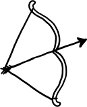

"Fraulein, fraulein, xqtxqtxqtxqtxqt,[4] hava gut gut, güneş gut gut, xwqxwqxwqxwqxwq[5]!"
Temizlikçi kadın elinde devasa bir toz bezi, suratında daha da yayvan bir tebessümle odama dalıp, bir hamlede açtı tüm perdeleri ardına kadar. Güneşin ışılarından yaralanan biçare bir vampir gibi acıyla geri çekildim.
"Hep böyle midir Berlin'de hava?" dedim sesim çıktığında. Hem Araf'ın Almanca piyasaya çıkması ve bir dizi okuma sebebiyle, hem de Berlin-İleri Bilimler Derneği'nin verdiği bursa icaben Almanya turnesindeyim. Daveti yaparken kimse bana güneşten söz etmemişti.
"Yok, yok" dedi temizlikçi kadın bugüne değin işittiğim en kaskatı aksanlı İngilizceyle, "aslında iki gün öncesine kadar yağışlı puslu idi, daha yeni yaz geldi. Siz şanslısınız!"
Kafamı sallıyorum hevesle. Şanslıyım, güneş gelmiş ben gelmeden. Sırrımı saklıyorum kadından, tıpkı senebesene nicelerinden sakladığım gibi. Bilmesinler affedilmez kusurumu; bilmesinler güneşi günahım kadar sevmediğimi.
Yazın ilk günleri geldi mi, hani kuşlar cıvıl cıvıl, sanırsın ki yeni bir bestecinin eserlerini keşfettiler; hani renkler bir başkalaşır, açılır saçılır; hani ağaçlar donanmış, kokular katmerlenmiş; şehir kendince kadrince sil baştan donanır ve hani insanlar baskı altından kurtulmuş yay misali fırlar ya sokaklara, dışarlara, atarlar kendilerini illaki kamusal alana; hani kimisi üşenmeyip mendil büyüklüğünde çimenlerde piknik yapar ya; hani işte o dönemlerde, öyle günlerde, benim moralim bozulur oldum olası, kendime kapanırım. Bedenim bir türlü ayak uyduramaz yazın ritmine, sanki yürümeyi unutmuşum. Âdeta herkesin işittiği bir ritim var, bir ben sağır olmuşum, o ritmi duymuyorum, kulaklarımı ovuşturuyorum, ne gam, onların adımları neşeli bir melodi, ben kalıyorum beride kağnı misali; onlar sekerken ben sendeliyorum sadece, onlar hızlanırken ben duruyorum, durmak ki beni en çok ürküten. Elimde değil, güneşin altında ben donuyorum.
Güneşi neden sevmediğimi bilmiyorum, belki vardır ulvi bir sebebi, belki de çok kuşatıcı olduğu için. Lav gibi kapsayıcı, içine çektiğini geri vermeyen bir rahim gibi yutucu, illaki herkesi alacak evrenine; kuşatma çemberinden korunabilmek için tek çare, gireceksin bir kovuğa çıkmayacaksın. Güneş bir diktatörlük rejimi, beğenmiyorsan rejimi gölgede bekleyeceksin.
Belki de "mecburi" yanından hazzetmiyorumdur güneşin. Mecburi övgüye tabi, mecburen sevilen, yeğlenen üstünlüğüne inat.
Ya da belki sırf sıcak oluşundadır mesele. Sıcaklık baş edemediğim bir durum. Çocukluğumun kadınlar hamamı kâbusları, atalet ve erime damla damla, yok olmaktan korkmayan yazar olur mu bilmem, yok olmaktan korkmayan yazmaya kalkar mı sanmam, sıcaklık yok oluşun sinsicesi.
Güneşli yazılar yazamayışım bu yüzden mi? Ne vakit kararsa ağırlaşsa hava, hani kurt havası ha yağdı ha yağacak, bir keyif, bir yaşam sevinci, bir enerji içimde, söylemeye utandığım. Yaşasın karardı hava, yaşasın ayın karanlık yüzü vurdu üstümüze. Yarasalar gibi karanlıkta çalışmam, illaki karanlıkta yazmam; güneş altında araba yolculuğu yapıyorsak camlara eşarptan, atkıdan, artık ne bulursam perdeler çekmem; deniz kenarına gidilmişse, keyif çatmak bir yana acı çekmem bu yüzden. Deniz dediğin başımın üstüne de, denizin tepesine dikilen güneşle derdim; plajın altında bir dehliz ya da üstünde cam geçit olsa, ben denizden doğruca o iç kısma geçsem; hiç görmeden güneşin altında saatlerce kıpırtısız yatan o uzaylıları. Ne vakit dostlar meclisinde olsak gün içinde masanın gölgede kalan yerine ilişmem de bu yüzden, köşe bucak kaçmalarım güneşten ve güneşli hallerden... İçimden homurdanıyorum: Ne oluyor bu güneş ahalisine, bu neşe, bu yaşama sevinci nereden geliyor üzerlerine? Daha dün onca derdin tasan vardı, ne çabuk silkelendin, yaşasın çıktı diye güneş, bir hafiflik, bir iyimserlik, kıskanıyorum belki de, ama içimden bir ses sormadan edemiyor: güneşin verdiği umuttan kime ne fayda gelir?
Güneş bir göz tepemde, hiç kapanmayan. Tombul yayvan bulutlar önüne geldi mi değmeyin keyfime, demek ki bir anlığına da olsa göz kapandı, görmüyor artık beni; her gözün kırpmaya ihtiyacı var ne de olsa, semavi bile olsa böylesine. Güneşi bu kadar sevmeyip de bu senenin hatırı sayılır bir kısmını Arizona'da geçirmem ilahi takdir olsa gerek. Fazla konuşmayacaksın, çarptı mı çarpıyor takdiri ilahi.
Sonra sonra öğrendim ki meğer psikoloji kitaplarında başlı başına öğrencilere anlatılan bir tür "vaka" imiş bu durum, yani karşılığı varmış literatürde. Bu kadarını öğrenmek kâfi geldi. Ne de olsa, tedavi için filan değil, esas anormalliklerimizin normal olduğunu görmek için ihtiyacımız var psikojiye ve psikiyatriye.
"Gut gut, xcvtxcvtxcvt,[6]" diye başını sallıyor temizlikçi kadın.
Bilgisayar ekranına vuruyor parlak ışınlar, en nefret ettiğim şey, nasıl anlatırım. Kadına teşekkür ediyorum, beni karanlıktan kurtardığı için o da memnun hoşça kal diyor. Ayakta adım adım izliyorum odamdan çıkışını. Kapı kapanır kapanmaz, beri yanda soluğumu tutup dinliyorum ayak seslerinin uzaklaşmasını. Yeterince uzaklaştığına kani olduğumda, bir koşu dönüp yazı masama, tüm perdeleri çekiyorum birer birer, usulca, bir suç işlercesine gizlice.
Berlin